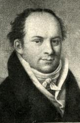
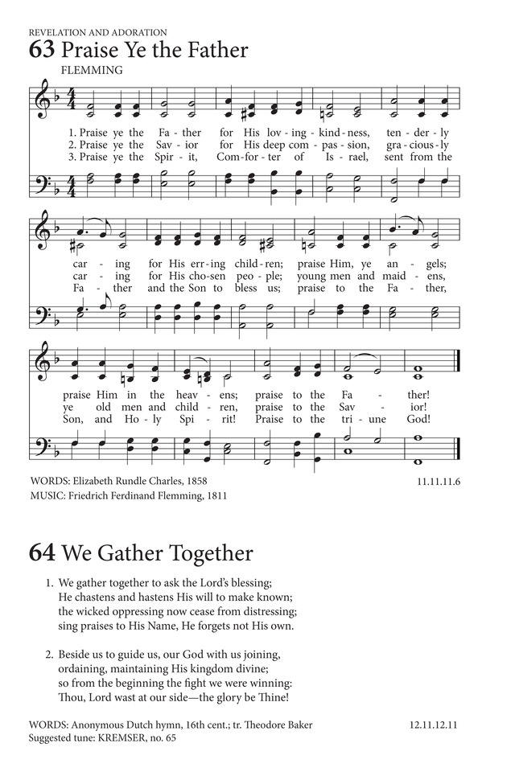

|
|
479生命之主 |
|
1 Lord of the living, in your name assembled
2 Help us to treasure all that will remind us
3 May we, whenever tempted to dejection
4 Lord, you can lift us from the grave of sorrow |
|
|
https://www.hopepublishing.com/find-hymns-hw/hw3565.aspx LORD OF THE LIVING
|
|
|
|
|


479生命之主 https://youtu.be/kzujBybf8bg FLEMMING
| Text: | Lord of the Living |
| Author: | Fred Kaan |
| Tune: | CHRISTE SANCTORUM |
| Harmonizer: | David Evans, 1874-1948 |
| Short Name: | Fred Kaan |
| Full Name: | Kaan, Fred, 1929-2009 |
| Birth Year: | 1929 |
| Death Year: | 2009 |
Fred Kaan

Hymn writer. His hymns include both original work and translations. He sought to address issues of peace and justice. He was born in Haarlem in the Netherlands in July 1929. He was baptised in St Bavo Cathedral but his family did not attend church regularly. He lived through the Nazi occupation, saw three of his grandparents die of starvation, and witnessed his parents deep involvement in the resistance movement. They took in a number of refugees. He became a pacifist and began attending church in his teens.
Having become interested in British Congregationalism (later to become the United Reformed Church) through a friendship, he was attended Western College in Bristol. He was ordained in 1955 at the Windsor Road Congregational Church in Barry, Glamorgan.
In 1963 he was called to be minister of the Pilgrim Church in Plymouth. It was in this congregation that he began to write hymns. The first edition of Pilgrim Praise was published in 1968, going into second and third editions in 1972 and 1975. He continued writing many more hymns throughout his life.
Dianne Shapiro, from obituary written by Keith Forecast in Independent (http://www.independent.co.uk/news/obituaries/fred-kaan-minister-and-celebrated-hymn-writer-1809481.html)
| Tune Information | |
|---|---|
| Name: | CHRISTE SANCTORUM |
| Harmonizer: | David Evans, 1874-1948 |
| Meter: | 11.11.11.5. |
| Key: | D Major |
| Source: | Paris Antiphoner (1681); From the Revised Church Hymnary (1927) |
| Copyright: | Used by permission of Oxford University Press |
| Short Name: | David Evans |
| Full Name: | Evans, David, 1874-1948 |
| Birth Year: | 1874 |
| Death Year: | 1948 |
David Evans (b. Resolven, Glamorganshire, Wales, 1874; d. Rosllannerchrugog, Denbighshire, Wales, 1948) was an important leader in Welsh church music. Educated at Arnold College, Swansea, and at University College, Cardiff, he received a doctorate in music from Oxford University. His longest professional post was as professor of music at University College in Cardiff (1903-1939), where he organized a large music department. He was also a well-known and respected judge at Welsh hymn-singing festivals and a composer of many orchestral and choral works, anthems, service music, and hymn tunes.
Bert Polman
| Tune: | FLEMMING |
| Composer: | Friedrich F. Flemming, 1778-1813 |
| Short Name: | F. F. Flemming |
| Full Name: | Flemming, F. F. (Friedrich Ferdinand), 1778-1813 |
| Birth Year: | 1778 |
| Death Year: | 1813 |
Friedrich Ferdinand Flemming Germany 1778-1813.

Born in Neuhausen, Erzgebirge, Germany, he studied medicine at Wittenberg, 1796-1800, Jena, Vienna, and Trieste. He practiced as a physician in Berlin until his death, but, musically, is remembered for his setting of Horace's ode beginning “Integer Vitae”, from which the tune “Flemming” is adapted. He was active in musical circles and composed many songs for a male vocal ensemble, “Liedertafel”. He died in Berlin.
John Perry

David Evans (composer) Wikipedia
David Evans (6 February 1874 – 17 May 1948) was a Welsh musician, academic and composer.[1]
Evans was born at Resolven, Glamorgan. He worked in the coal industry as a teenager, but music was always his primary interest. He won a music scholarship and became a pupil of Joseph Parry, which led to his qualifying at University of Wales, Cardiff, in 1895. He went on to become organist and choirmaster of Jewin Calvinistic Methodist Church in London. He succeeded Joseph Parry, his former teacher, in the Music department at Cardiff, where he was appointed a professor in 1908. Among his students there were Morfydd Owen,[2] Grace Williams[3] and David Wynne.[4]
Most of his compositions were of a religious nature, including many hymns. Evans edited the revised edition of the Church of Scotland's Church Hymnary in 1927. Notably, it is in this publication that he combined an old Irish folk song with a versified English translation of an 8th-century Irish poem to produce the now widely known Christian hymn, "Be Thou My Vision". One of his original hymn tunes, Lucerna Laudoniae, was used to set the words For The Beauty of the Earth. It was initially written under the pseudonym Edward Arthur.[5]
Aside from hymns, Evans wrote anthems and service music as well as many orchestral and choral works. The oratorio Llawenhewch yn yr Iôr was first performed at the Caernarfon Festival in 1906 and a dramatic cantata The Coming of Arthur, was premiered at the Cardiff Triennial Festival the following year.[6][7] His orchestral Concerto for String Orchestra op 7, was published as part of the Carnegie Collection of British Music in 1928. Some compositions attributed to him were in fact written by his eldest son, Arthur, who died in the influenza pandemic of 1918.
Evans participated actively in the Eisteddfod movement. He died at Rhosllannerchrugog. His papers are held by the National Library of Wales[8] and some by his grandson, also named David Evans.
References[edit]
- ^ John William Jones. "Evans, David (1874-1948), musician". Welsh Biography Online. National Library of Wales. Retrieved 19 October 2018.
- ^ Davies, Rhian. An incalculable loss: Morfydd Owen (1891-1918)
- ^ Grace Williams, British Music Collection
- ^ David Wynne in conversation with A. J. Heward Rees, Welsh Music Journal, Winter 1977
- ^ Luff, Alan. Notes to The English Hymn Volume 3, Hyperion CD 12013 (2002)
- ^ Williams, Professor Professor David Ewart Parry. 'Evans, David (1874 - 1948), musician', in the Welsh Dictionary of National Biography
- ^ The Coming of Arthur, score at IMSLP
- ^ David Evans (Musician) Papers at the National Library of Wales archive
https://en.wikipedia.org/wiki/David_Evans_(composer)